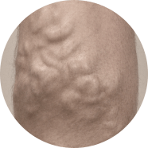
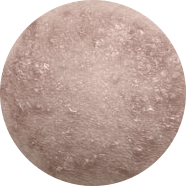
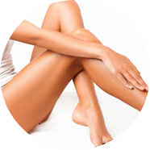
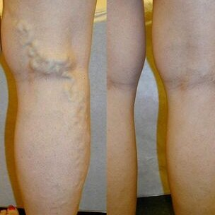

L'opinione che è impossibile sbarazzarsi delle vene varicose in un breve tempo e senza un intervento chirurgico è saldamente radicata nella mente delle persone. Anche se questa affermazione è diventata effettivamente irrilevante negli anni 2000, molti credono ancora che lo sia.
Tuttavia, in realtà, la scienza non si ferma, specialmente nel campo della flebologia (una scienza che studia la struttura, la funzione e la patologia dei vasi sanguigni). Una delle ultime scoperte mondiali è un gel , che aiuta ad alleviare i sintomi delle vene varicose. È riconosciuto dagli esperti come il miglior prodotto che aiuta ad eliminare le vene varicose. L' innovativo prodotto aiuterà a normalizzare la circolazione sanguigna, prevenire la comparsa delle vene varicose, è in grado di fornire un sollievo completo efficace dai sintomi delle vene varicose a casa in 1 mese.
Sintomidelle vene varicose
Capillari anormalmente dilatati

Vasi sanguigni gonfi e sporgenti

Eruzione cutanea
Prurito e pesantezza alle gambe
Proprietà di
Aiuta ad alleviare gonfiore e dolore
Aiuta a ridurre l'anomala dilatazione dei capillari

Stimola la circolazione sanguigna
Aiuta a levigare e idratare la pelle
Con l'uso regolare, aiuterà:
Alleviare il dolore e il gonfiore, ripristinare il naturale flusso sanguigno.
Ridurre al minimo il dolore e il rischio di coaguli di sangue.
Migliorare le condizioni dei vasi sanguigni, restituire la loro elasticità.
La redazione di "Hello Health" ha intervistato specialisti con molti anni di esperienza nel campo della flebologia. Tutti hanno detto la stessa cosa: raccomandano fortemente ai loro pazienti.
Andrea Lorini, specialista in fleborogia (oltre 30 anni di esperienza). Nella mia pratica, c'erano in precedenza diversi casi di pazienti operati. Questo di solito succede nella terza o quarta fase delle vene varicose. Tuttavia, il gel ha cambiato radicalmente la situazione.
Questo meraviglioso prodotto può aiutare sia nelle prime fasi della comparsa delle vene varicose che nei casi più gravi in cui sembra impossibile fare a meno di un intervento chirurgico. Ora raccomando interventi chirurgici solo in casi molto complessi e consiglio di provare prima a risolvere il problema con questo gel.
, senza dubbio, il miglior prodotto per sbarazzarsi dei sintomi delle vene varicose e prevenirne l'insorgenza, a casa.
Ecco i risultati prima e dopo 1 mese di utilizzo di questo gel:
Monica Terzi, esperta di salute vascolare (più di 11 anni di esperienza). Indubbiamente, uno dei vantaggi di è la sua composizione. Questo gel contiene ingredienti naturali unici che aiutano efficacemente ad eliminare le cause delle vene varicose.
Voglio sottolineare che grazie alla grande quantità di flavonoidi, tannini e vitamine che si trovano nell'estratto di castagno, il gel aiuta ad aumentare il tono dei capillari e normalizzare la circolazione sanguigna.
L'effetto dell'utilizzo di questo gel è semplicemente fantastico. Credo che sia un prodotto rivoluzionario che cambia radicalmente il modo in cui ti avvicini alle vene varicose e ti consente di fare a meno di interventi chirurgici dolorosi e costosi. Questo gel può essere utilizzato da persone di tutte le età!
Alessio Percuzzi, uno dei principali specialisti in flebologia (oltre 30 anni di esperienza). Per aiutare con le vene varicose, consiglio vivamente di utilizzare . Questo gel può facilmente far fronte anche a casi difficili, alleviare le condizioni dei pazienti con il terzo e il quarto stadio. Aiuta a eliminare la causa delle vene varicose, e non solo i sintomi.
Consiglio anche di utilizzare questo gel a scopo profilattico, al fine di prevenire definitivamente la comparsa di vene varicose in futuro.
Nella mia pratica, ci sono stati molti casi in cui ha aiutato con casi di vene varicose gravi. Per esempio:
Vene varicose: pericolo in numeri
80%delle donne hanno sintomi di insufficienza venosa cronica
20%delle persone che soffrono di vene varicose sono costrette a sottoporsi a un intervento chirurgico pericoloso
65%hanno un aumentato rischio di vene varicose, soprattutto se ci sono stati casi di vene varicose in famiglia
70%delle donne in gravidanza soffre di vene varicose
90%delle donne che indossano tacchi alti più di 8 centimetri soffrono di dolori ai piedi almeno una volta alla settimana
Efficienza dell'utilizzo di in numeri
100%non sente dolore o affaticamento alle gambe
97%hanno notato la scomparsa della rete vascolare.
96%il lavoro del sistema circolatorio è normalizzato.
100%non ho notato effetti collaterali.
95%le vene sporgenti e infiammate sono scomparse.
Prodotto efficace al 100%
Il gel è certificato nell'UE e approvato per l'uso in Europa. Sentirai un miglioramento dopo 1 mese di utilizzo di ! Vale la pena provare!
Michele, 45 anni
Le gambe divennero bluastre, le vene si gonfiarono. Ho smesso di fare bilanciere, ma il problema non è andato da nessuna parte. Mi è stato detto che solo l'operazione avrebbe aiutato. Ma il gel ha risolto la questione entro un mese! Le gambe sono diventate di nuovo di colore normale.
Eugenia, 35 anni
Applico regolarmente il gel la sera dopo il lavoro. Allevia rapidamente gonfiore e affaticamento e anche la sudorazione dei piedi è notevolmente ridotta. Al mattino sento le mie gambe come nuove. Lo consiglio a tutti
Giulia, 35 anni
Il gel è una vera salvezza per me. Lo applico quotidianamente. Solo un paio di settimane dopo l'inizio dell'utilizzo, ho notato una visibile diminuzione dei vasi sporgenti, le mie gambe hanno un aspetto migliore, mi sento leggera ed energica anche la sera
Elisa, 38 anni
Mi sono uscite le vene sulle gambe. Durante la visita, mi è stato detto che potevano essere rimosse solo chirurgicamente. Ma non volevo fare un intervento chirurgico. Non volevo cicatrici sulle mie gambe. Ho deciso di provare il gel , dopo 3 settimane di utilizzo sono passati dolore e gonfiore alle gambe. Dopo un'altra settimana ancora, le vene gonfie erano quasi scomparse.

Veronica, 41 anni
Per molti anni ho sofferto di vene varicose sotto le ginocchia. Le vene lì erano costantemente pruriginose, a volte doloranti. L'anno scorso ho notato che le vene hanno iniziato a gonfiarsi. E ho deciso che dovevo fare qualcosa. Sono andata da uno specialista e mi ha consigliato di provare . È stato incredibile, ma ho visto una differenza nella prima settimana di utilizzo di questo gel. Il prurito e il dolore sono scomparsi quasi immediatamente. E dopo 2 settimane, ho notato che le vene sotto le ginocchia erano quasi scomparse.
Anna, 36 anni
Ho le vene varicose dopo la gravidanza. La crema che mi è stata raccomandata in farmacia mi ha dato solo un risultato temporaneo. Le calze a compressione erano troppo strette e impossibili da averli addosso. Ad essere onesti, mi sono quasi arreso e ho quasi deciso di sottopormi a un'operazione, ma ho letto per caso di e l'ho comprato. Sono rimasta colpita dal risultato: i nodi venosi delle gambe sono quasi scomparsi. Ora le mie gambe sono di nuovo belle come prima! Posso indossare di nuovo gonne corte!
Dina, 67 anni
Ho le vene varicose ereditarie. Ne ho sofferto per tutta la vita. In gioventù, non era molto fastidioso, ma con l'età è diventato molto brutto: le vene bruciano di fuoco, soprattutto se tutto il giorno sulle gambe o porto borse pesanti. Mia figlia ha recentemente acquistato e questo gel mi ha salvato! Non avrei mai pensato di poter liberarmi così rapidamente di un problema che ha afflitto tutta la mia vita. Ho usato questo gel negli ultimi 6 mesi e ho dimenticato i problemi con le vene.
DOMANDE FREQUENTI
Quali possono essere gli effetti collaterali? +
Il gel è composto da ingredienti naturali, privo di parabeni, coloranti, aromi sintetici e prodotti OGM. Il prodotto ha superato la certificazione e non ha controindicazioni. Non provoca allergie ed effetti collaterali.
Quanto tempo dovrebbe essere usato? +
La durata del corso dipende direttamente dallo stadio delle vene varicose. Di solito dopo 1,5-2 settimane, i primi risultati dell'uso del gel sono già evidenti.
Dove acquistare? +
La nostra azienda è l'unico fornitore ufficiale di gel nell'Unione Europea. L'ordine può essere effettuato tramite questo sito. Acquista solo il prodotto originale !